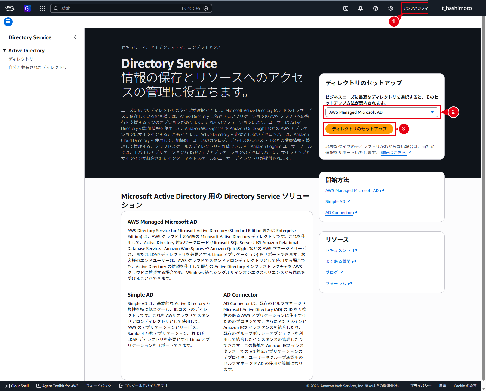
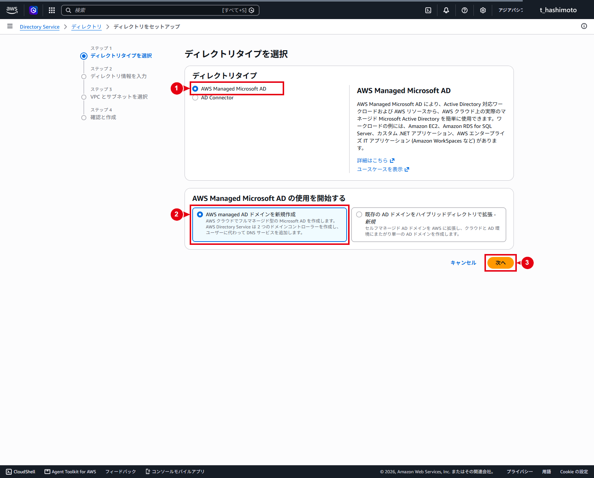
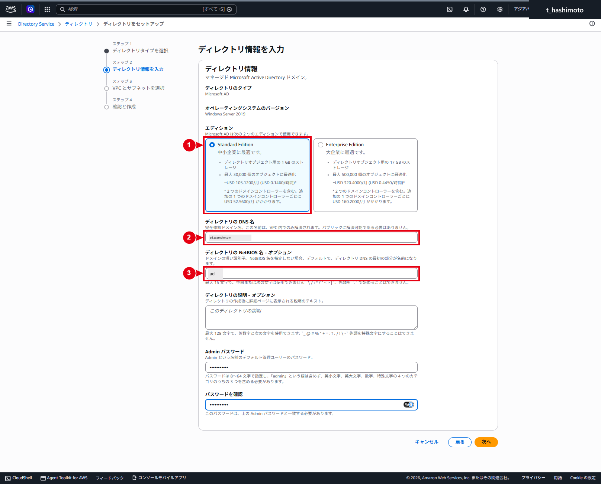
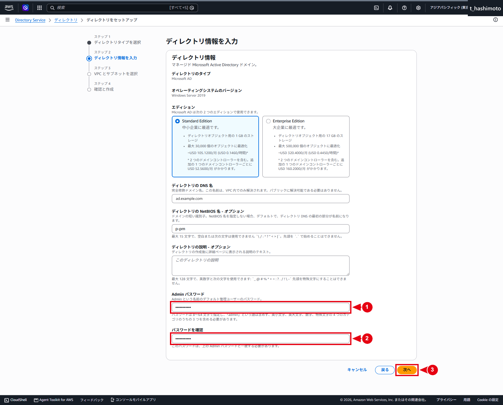
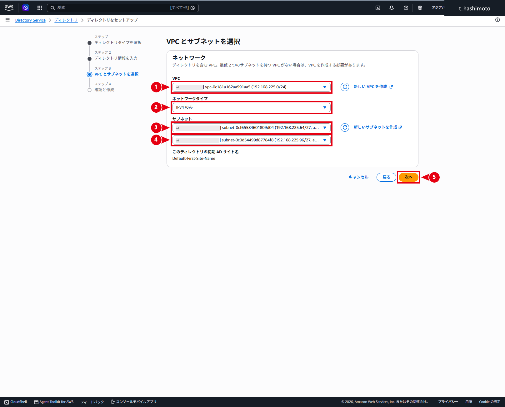
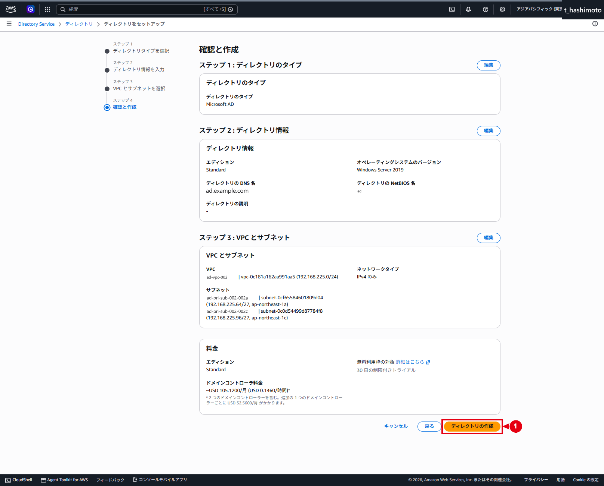

Managed Microsoft ADの構築
仕様
構成・動作
AWS Managed Microsoft ADを作成すると、AWSが高可用性に必要な基盤と、ディレクトリ管理に使用するActive Directoryオブジェクトを自動で構成します。
AWSが構成する基盤
| 作成内容 | 役割・運用上の扱い |
|---|---|
| 2台のドメインコントローラー | 異なる2つのアベイラビリティーゾーンへ配置されます。主系／待機系ではなく、どちらも通常時から稼働する書き込み可能なドメインコントローラーです。 |
| ENI | 各ドメインコントローラーをVPCへ接続します。 |
| セキュリティグループ | Active Directoryの通信に必要なルールが設定されます。初期状態では、作成先VPCのプライマリIPv4 CIDRからの通信が許可されます。 |
| 2つのDNS IPアドレス | ドメイン参加、名前解決、認証およびグループポリシーの参照に使用します。クライアント側のDNS設定は、ディレクトリ作成後に別途行います。 |
| バックアップと暗号化 | バックアップは1日1回自動実行され、ドメインコントローラーのAmazon EBSボリュームは暗号化されます。 |
AWS Managed Microsoft ADで作成される内容
⚠️ 注意：ディレクトリ用ENIを削除しない
AWSが自動作成したディレクトリ用ENIは、VPCとドメインコントローラー間の通信に必要なため、手動で削除しません。説明欄のAWS created network interface for directory <directory-id>で識別できます。
管理範囲
Active Directory内に作成される管理領域
| 作成内容 | 役割・運用上の扱い |
|---|---|
Adminユーザー |
ディレクトリ管理者として、NetBIOS名と同名のOU配下にあるUsersへ作成されます。本ページの例ではad\Usersです。 |
AWS Delegated Groups OU |
ユーザーへ管理権限を委任するためのグループが格納されます。GPO管理や詳細なパスワードポリシー管理など、作業内容に対応する委任グループを使用します。 |
AWS Reserved OU |
AWSが使用するサービス管理アカウントが格納されます。お客様が管理対象として使用する領域ではありません。 |
ad OU |
ディレクトリ作成時に指定したNetBIOS名に基づく管理用OUです。配下にComputersとUsersが作成され、お客様が管理するコンピューターとユーザーを配置します。 |
ℹ️ 情報：IAMとActive DirectoryのAdminの違い
AWSの構築・設定操作に使用するIAMユーザー／IAMロールと、Active Directoryの管理に使用するAdminは、別のID・権限として管理します。Adminを作成しても、AWSリソースへのアクセス権は自動で付与されません。
AWSが作成して適用するGPO
| GPO | 主な適用対象・役割 |
|---|---|
Default Domain Policy |
ドメインへ適用され、パスワードとKerberosのポリシーを設定します。 |
ServerAdmins |
ドメインコントローラー以外のコンピューターへ、委任されたサーバー管理者グループをローカル管理者として設定します。 |
AWS Reserved Policy:User |
AWS Reserved OU内のユーザーへAWS推奨のセキュリティ設定を適用します。 |
AWS Managed Active Directory Policy |
すべてのドメインコントローラーへAWS推奨のセキュリティ設定を適用します。 |
TimePolicyNT5DS / TimePolicyPDC |
PDC Emulatorとそれ以外のドメインコントローラーに、それぞれ必要な時刻同期設定を適用します。 |
Default Domain Controllers Policy |
作成されますが、AWS Managed Microsoft ADでは代わりにAWS Managed Active Directory Policyが使用されます。 |
AWS Managed Microsoft ADで作成される内容
制約事項
AWSが作成したGPOは、削除、編集または既存リンクの解除を行えません。お客様固有の設定は専用GPOとして作成し、お客様が管理するOUへリンクします。
AWS Managed Microsoft ADで作成される内容
ℹ️ 情報：ドメインコントローラーの管理方法
ドメインコントローラー本体へ、RDPやPowerShell Remotingで直接ログオンすることはできません。AD管理ツールを使用する作業は、ドメイン参加済みの管理用EC2から実施します。管理用EC2の準備と接続方法は、管理用EC2起動・接続・AD管理開始手順を参照してください。
構築作業
1. Directory Serviceのセットアップを開始する
- AWSマネジメントコンソールへサインインします。
- 画面右上で、リージョンが「アジアパシフィック（東京）」になっていることを確認します。
- サービス検索から「Directory Service」を開きます。
- 「ディレクトリのセットアップ」で「AWS Managed Microsoft AD」を選択します。
- 「ディレクトリのセットアップ」を選択します。

2. ディレクトリタイプを選択する
- 「ディレクトリタイプ」で「AWS Managed Microsoft AD」を選択します。
- 「AWS Managed Microsoft ADの使用を開始する」で「AWS managed ADドメインを新規作成」を選択します。
- 「次へ」を選択します。
本環境ではAWS Managed Microsoft ADを新規作成するため、「既存のADドメインをハイブリッドディレクトリで拡張・新規」は選択しません。

3. ディレクトリ情報を入力する
DNS名はActive Directoryで使用する完全修飾ドメイン名です。NetBIOS名はドメインの短縮名として使用します。本ページでは公開用の例示値として、DNS名をad.example.com、NetBIOS名をadに統一しています。
⚠️ 注意：ディレクトリのDNS名を既存のDNS名前空間と重複させない
同じ名前のAmazon Route 53プライベートホストゾーンなどが存在すると、クライアントの名前解決に影響する可能性があります。入力前に既存のDNS名前空間と重複していないことを確認します。
「ディレクトリ情報を入力」画面では、次の設定値を使用します。
| 項目 | 設定値 |
|---|---|
| ディレクトリのタイプ | Microsoft AD |
| エディション | Standard Edition |
| ディレクトリのDNS名 | ad.example.com |
| ディレクトリのNetBIOS名 | ad |
| ディレクトリの説明 | 未入力 |
- エディションで「Standard Edition」を選択します。
- ディレクトリのDNS名に
ad.example.comを入力します。 - ディレクトリのNetBIOS名に
adを入力します。 - ディレクトリの説明は未入力とします。
- 続けて、次の「Adminパスワードを入力する」でパスワードを設定します。
ℹ️ 情報：クライアントのDNS設定は後続手順で実施する
ディレクトリを作成しただけでは、VPC内のクライアントが自動的にDirectory ServiceのDNS IPアドレスを使用する状態にはなりません。管理用EC2などの名前解決に必要なDHCPオプションセットまたはクライアントDNS設定は、後続手順で実施します。

4. Adminパスワードを入力する
- 「Adminパスワード」に、準備したパスワードを入力します。
- 「パスワードを確認」に、同じパスワードを再入力します。
- 次のパスワード要件を満たしていることを確認します。
- 文字数：8文字以上64文字以下
- 小文字、大文字、数字、英数字以外の文字の4分類のうち、3分類以上を含む
adminという単語を含まない
- 「次へ」を選択します。
⚠️ 注意：Adminパスワードの最長有効期間は既定で42日
AWS Managed Microsoft ADのDefault Domain Policyでは、Adminを含むユーザーのパスワード最長有効期間が42日に設定されます。運用開始前に、パスワードの保管担当者、変更担当者および次回変更日を決定します。

5. VPCとサブネットを選択する
「VPCとサブネットを選択」画面では、次の設定値を使用します。
| 項目 | 設定値 |
|---|---|
| VPC | ad-vpc-002（192.168.225.0/24） |
| ネットワークタイプ | IPv4のみ |
| サブネット1 | ad-pri-sub-002-002a（192.168.225.64/27、ap-northeast-1a） |
| サブネット2 | ad-pri-sub-002-002c（192.168.225.96/27、ap-northeast-1c） |
| 初期ADサイト名 | Default-First-Site-Name |
⚠️ 注意：サブネット1とサブネット2のアベイラビリティーゾーンを照合する
サブネット1がap-northeast-1a、サブネット2がap-northeast-1cに属していることを確認してから「次へ」を選択します。
- VPCで
ad-vpc-002を選択します。 - ネットワークタイプで「IPv4のみ」を選択します。
- サブネット1で
ad-pri-sub-002-002aを選択します。 - サブネット2で
ad-pri-sub-002-002cを選択します。 - 選択した2つのサブネットが、それぞれ
ap-northeast-1aとap-northeast-1cに属していることを確認します。 - 「次へ」を選択します。

6. 設定内容を確認して作成する
「確認と作成」画面で、次の内容を確認します。
- ディレクトリタイプ：「Microsoft AD」
- エディション：「Standard」
- DNS名：
ad.example.com - NetBIOS名：
ad - VPC：
ad-vpc-002／サブネットCIDR：192.168.225.64/27、192.168.225.96/27
⚠️ 注意：ディレクトリの作成後は構成変更に制約がある
DNS名、VPCおよびサブネットの誤りがないことを確認してから作成します。入力値に誤りがある場合は「ディレクトリの作成」を選択せず、該当画面へ戻って修正します。
内容に問題がなければ、「ディレクトリの作成」を選択します。
